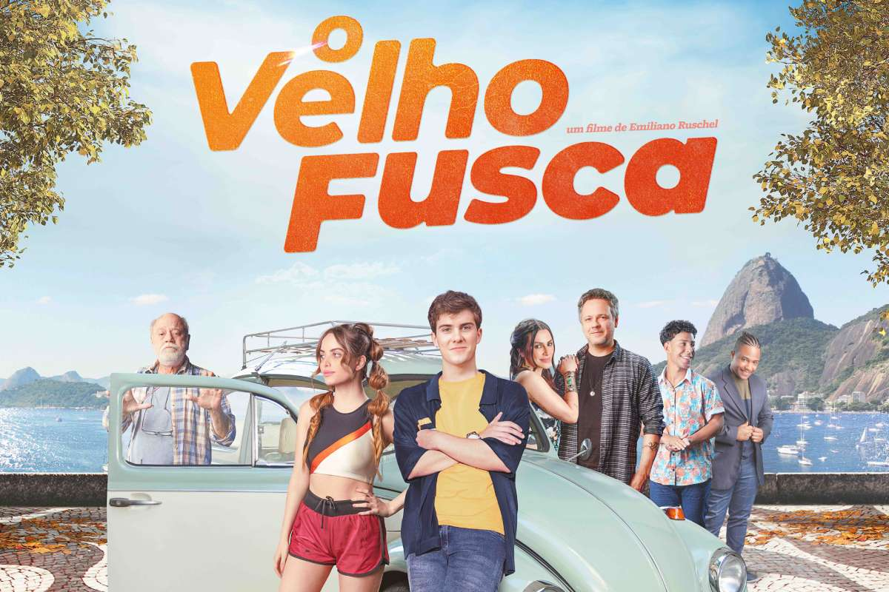
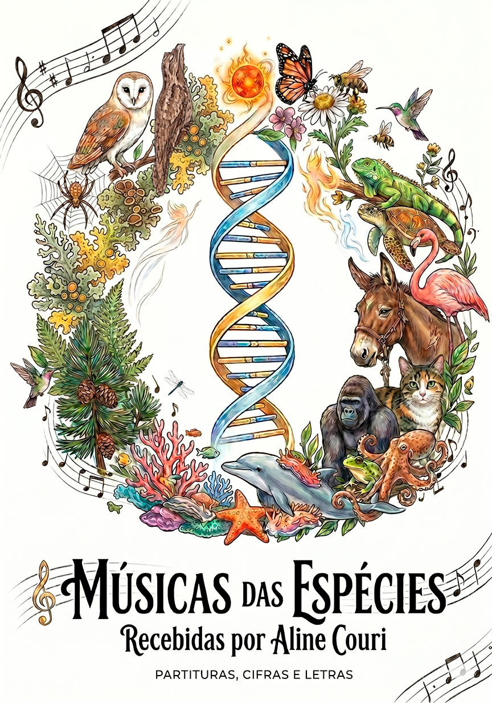
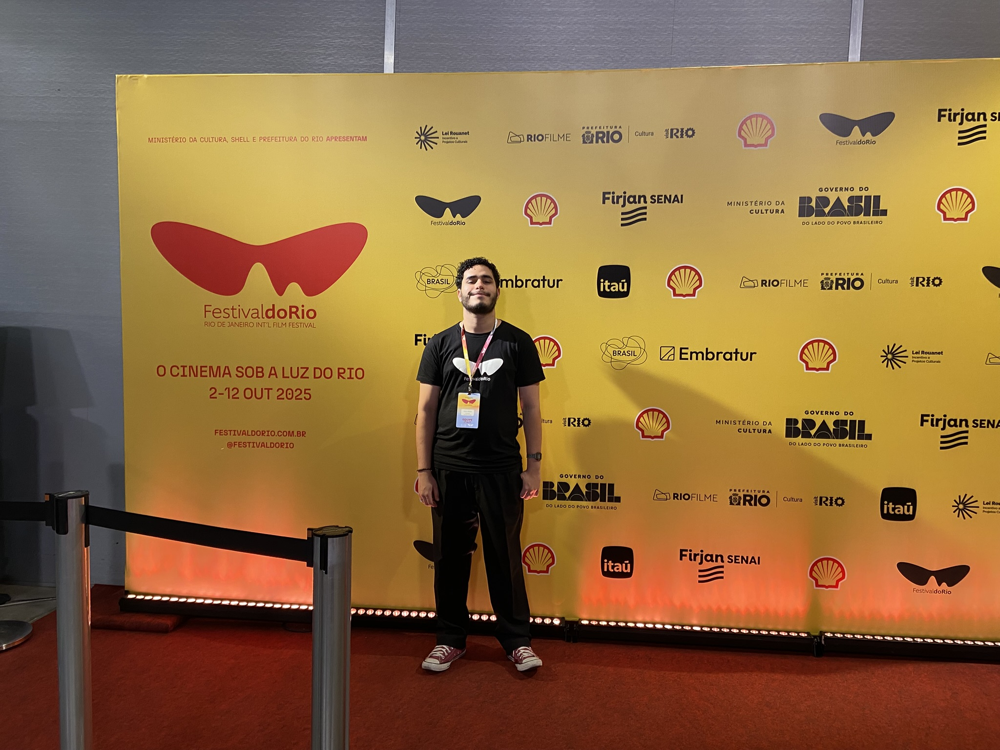
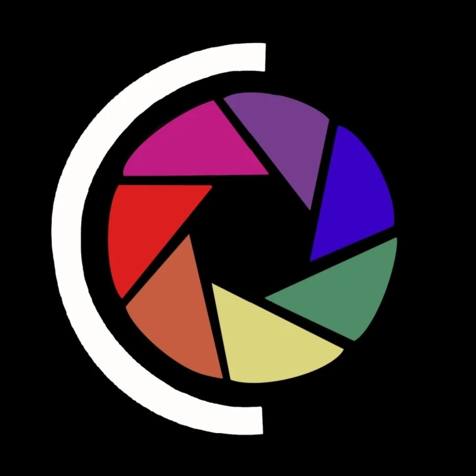
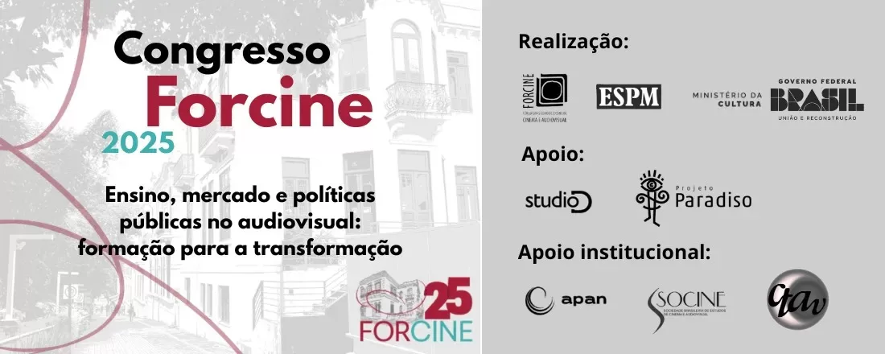
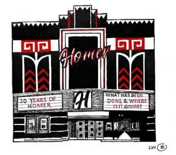
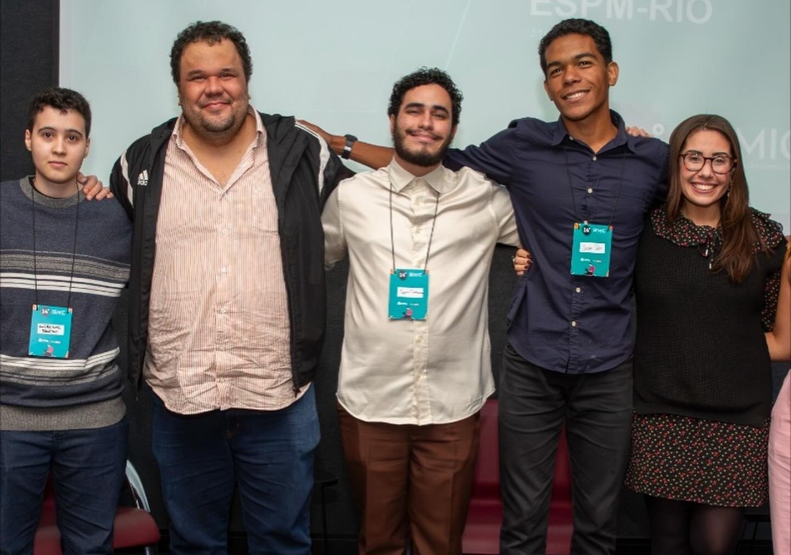
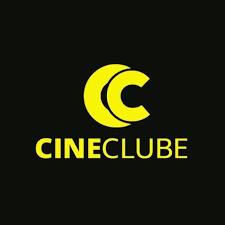
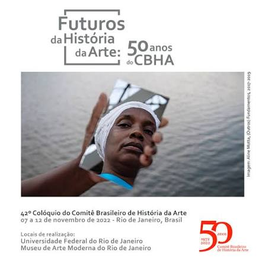

2026Pré-estreia do filme "O Velho Fusca"
Assistente de Produção
Atuação no suporte operacional da pré-estreia do longa-metragem, auxiliando a equipe de produção na organização, recepção de convidados e execução do evento.

2026Iniciação Científica – UFRJ - Música das Espécies
IA e Videoclipes
Pesquisa sobre o uso da Inteligência Artificial aplicada aos processos criativos e de produção de videoclipes, o projeto se encontra aprovado para sua apresentação parcial na SIAC 2026.

2025Festival do Rio
Programa Geração
Assistente de Produção do Programa Geração, colaborando na organização das atividades do festival e no suporte às equipes e convidados.
 2025
2025
Festival Universitário Beta
Curador e Produtor
Responsável pela curadoria das obras selecionadas e pela coordenação da equipe de produção geral do festival universitário da ESPM.

2025Cinestesia – ESPM
Coordenador de Distribuição
Coordenação de distribuição do núcleo de produções cinematográficas universitárias Cinestesia – ESPM, atuando no planejamento da circulação das obras, comunicação com festivais e organização das etapas de inscrição e acompanhamento dos filmes.

FORCINE
Monitor Coordenador
Coordenação da equipe de monitoria durante o Fórum Brasileiro de Ensino de Cinema e Audiovisual, auxiliando na organização das atividades do evento.

2024Congresso HoMER
Assistente de Produção
Participação na equipe de produção do congresso, oferecendo suporte logístico e operacional durante toda a programação.

2024Iniciação Científica
Inteligência Artificial
Pesquisa acadêmica dedicada ao estudo das aplicações da Inteligência Artificial em diferentes contextos da produção audiovisual.

2023Cineclube ESPM
Equipe de Curadoria
Participação na curadoria e organização das sessões do Cineclube ESPM, colaborando na seleção e discussão das obras exibidas.

2022Colóquio Brasileiro de História da Arte
Participação Acadêmica
Participação no Colóquio Brasileiro de História da Arte, acompanhando apresentações, debates e pesquisas sobre patrimônio, estética e história da arte, realizado na UFRJ e no Museu de Arte Moderna do Rio de Janeiro.